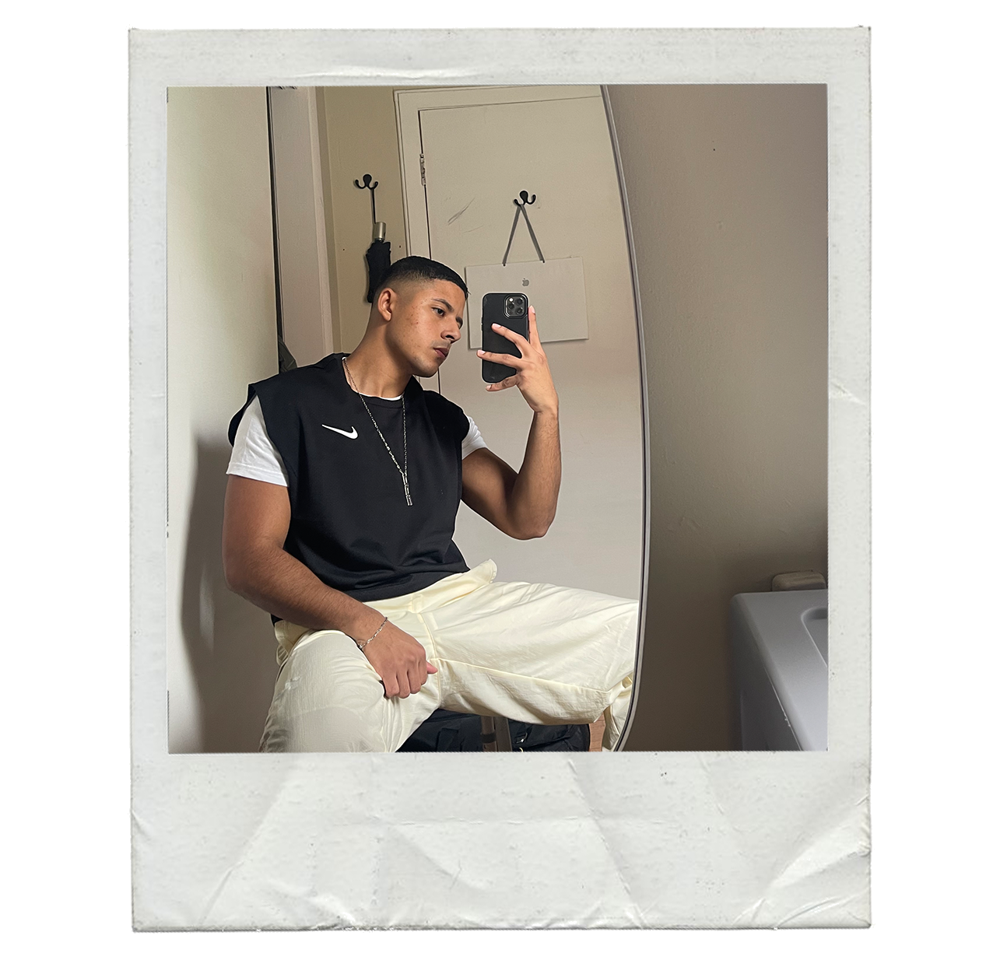

HOME
ABOUT ME
GALLERY
SOCIAL CAUSE
About Me

Hey everyone! My name is Andrei Villavicencio. I was born in New York City
and spent some of my childhood in the island of Puerto Rico.
I describe myself as a person who is passionate about creating. I love sharing my inner thoughts and emotions with the world.
I believe that in life you can find inspiration anywhere that you go. I don't like to box myself as a person, so I have many hobbies.
I love fashion, designing, music, and fitness. All of those things are like therapy to me and I don't know what I would do without them.
On my website you will find art that I've worked on. Hopefully it inspires you to create. The world is waiting for your unique ideas.
Here are more photos down below so you can get an idea of what I am like!